来源：https://ly5achi80l.feishu.cn/docx/GZXldng1OoKo74xlGulcZXh6nvb
大家好，我是包子，高报赛道IP，和大家分享一下我在各个场景的解决方案，总体来讲，RPA和AI技术使用比较多
一个人干活，流量、转化、产品的问题都要自己解决，效率必须拉满
本文原稿是上周在AI传术师群的分享（感谢七天邀请），重点是思路和工具
如果要涉及技术细节，每个小节都可以写一篇万字长稿了
我的流量来自于两个渠道，一个是视频，另一个是直播。
我每年只创作一轮视频，几乎就是年更博主。对各位日更的IP只能仰望。
前两年我的视频以5~15分钟的中长视频为主，效果挺好的
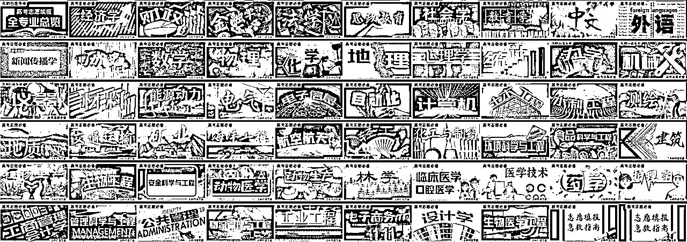
今年想尝试一些新思路，把专业写成了歌来进行讲解。
用AI写歌很简单，一两天就能弄明白，创作门槛低，版权属于自己，配上视频流量挺多
个人觉得还属于蓝海，建议做娱乐科普、做YPP的同学可以考虑一下
我的这类视频从难度上讲比科普视频大多了，因为要兼顾干货和娱乐，让观众在听歌时就能了解知识，RPA+AI+自己一起搞，每天都能做一条。
本来担心AI内容会受限，实际测试下来，这些AI写的歌还挺受欢迎，几乎每一条都可以进入抖音精选，甚至刚发出来只有100个赞就进入精选了。
这是几个视频刚入选抖音精选时大概的数据：
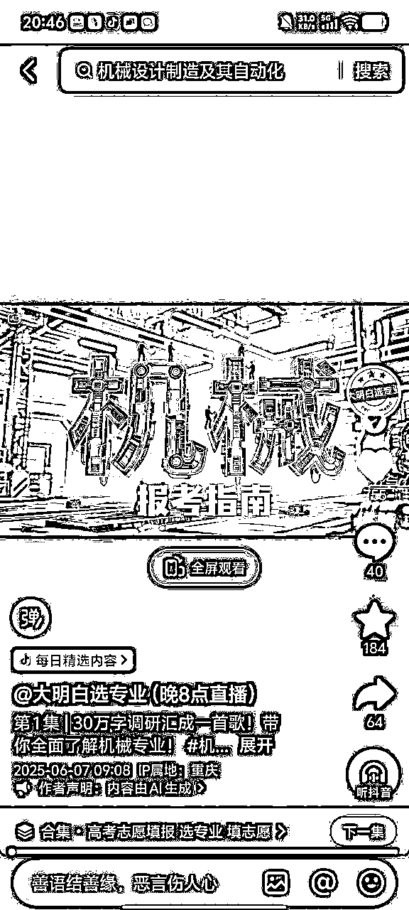
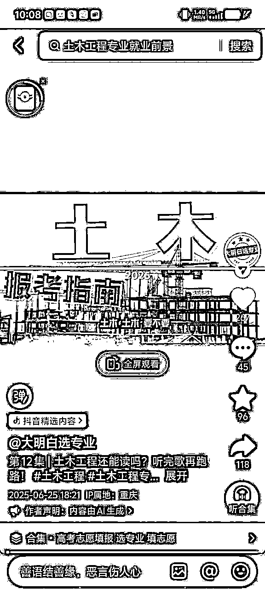
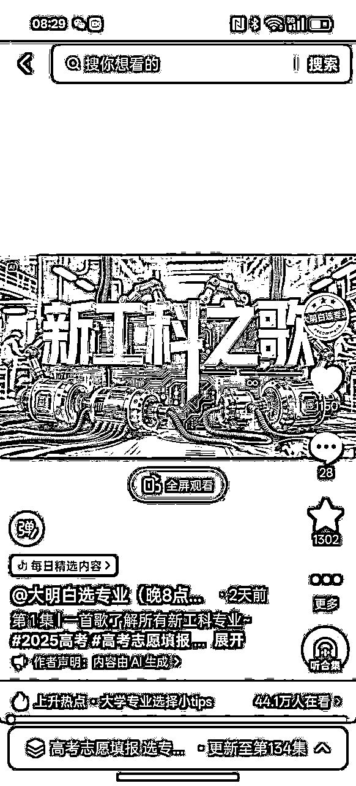
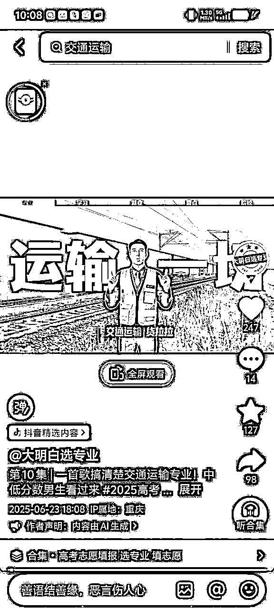
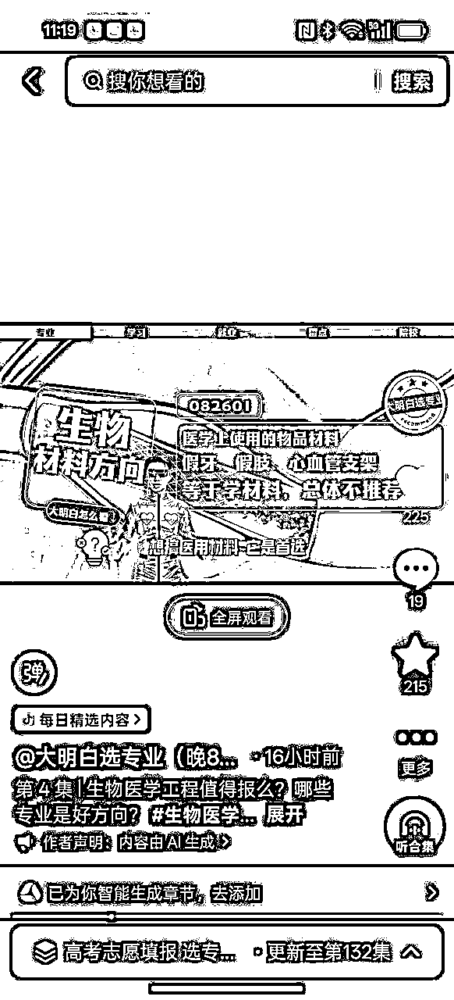
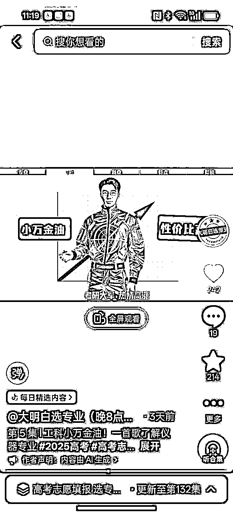
发个视频大家感受一下：
做这样的歌曲视频采用了哪些AI技术呢？
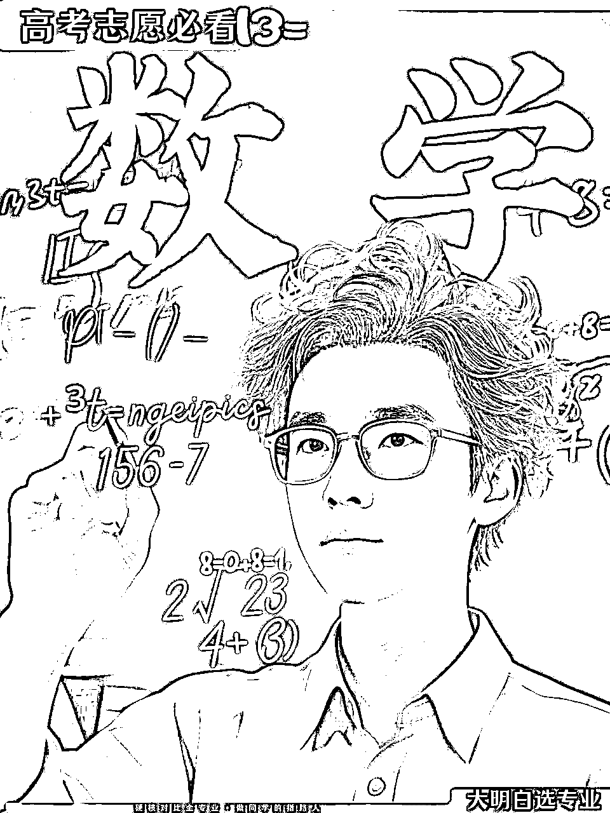
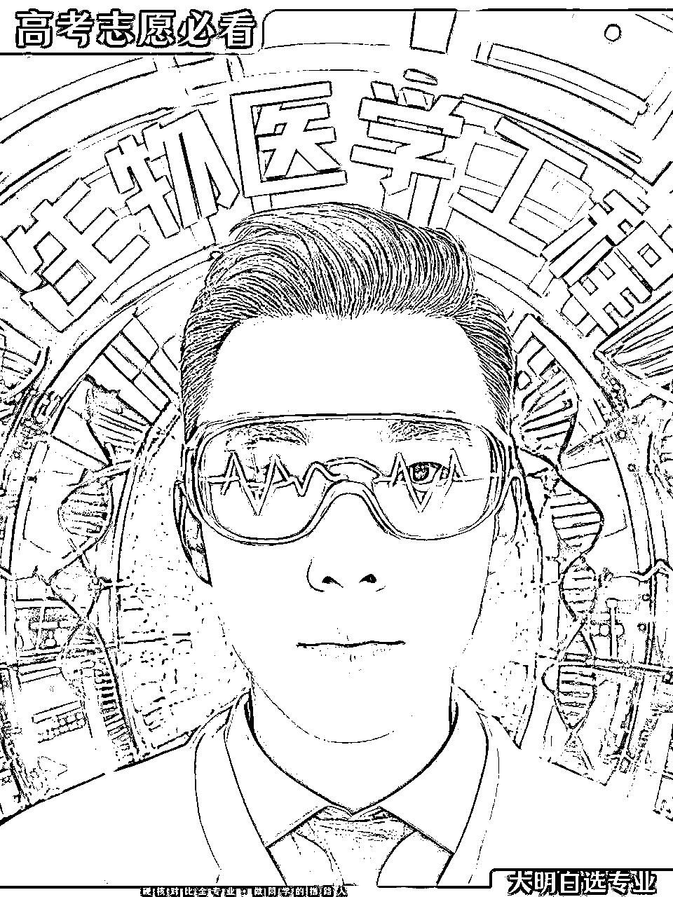
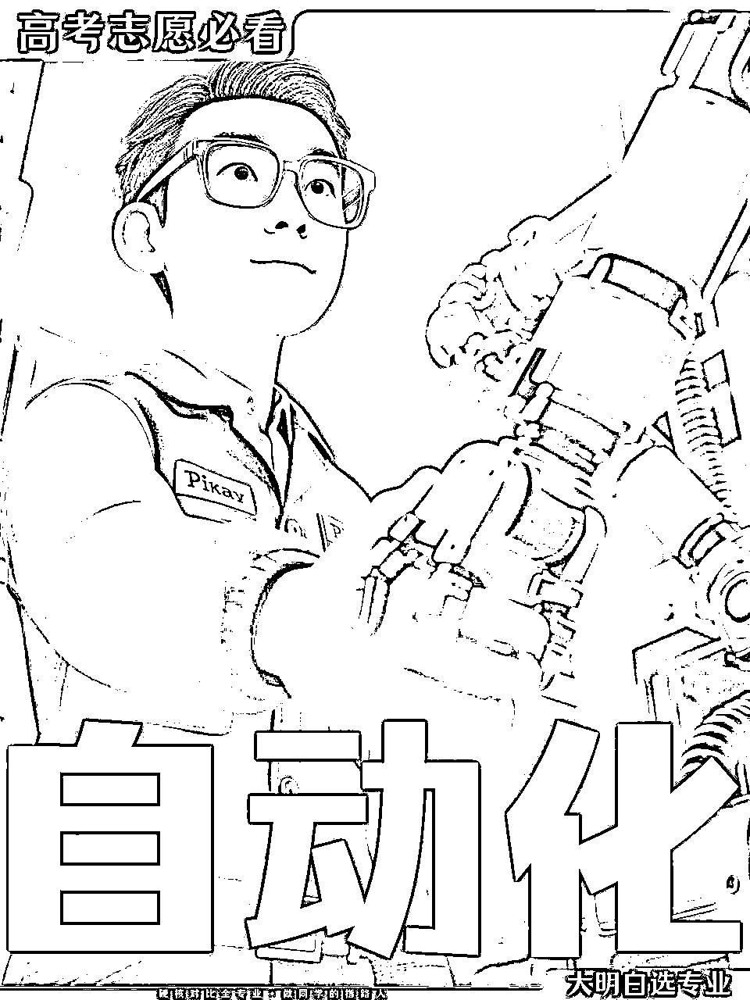
AI写歌在生活中更有意思，它是独一份的，比普通礼物珍贵多了
哪怕过去很多年，旋律和作者依然会记在脑海里，不会过时！大家现在听的歌是哪一年的？
今年孩子小学班级搞成人礼，我写了一首歌给班级，配上视频，班主任当场感动到泪崩！又写了一首给孩子，她开心极了，每天都哼着歌写作业~
去年年底我开始做直播，花了三个月，从一个直播小白做到了赛道头部
抖音的算法会周期性变化，直播间流量也会变，可能同样的内容，到了下个月的流量就只有上个月的一半了。
比如这场直播2个小时的曝光人数只有5万多，算是很低了，但因为各项指标都很高，所以依旧能保持2000多人在线
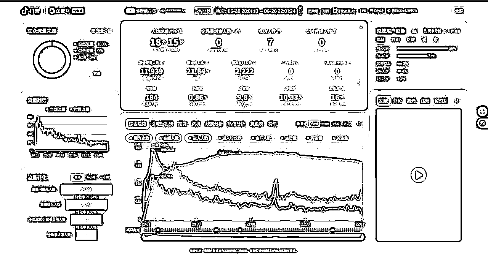
有很多同行来问直播间话术，其实我从来没整理过话术。如果人均停留时长是30秒，那么话术确实很重要。如果人均停留时长很长，那话术就不重要了，更重要的是价值观
有一次试着开了十几分钟小风车，就有1000多个家长留了联系方式，但是实在没有精力去挨个添加家长微信，还要和他们聊，索性就不开小风车了，所以线索人数是0
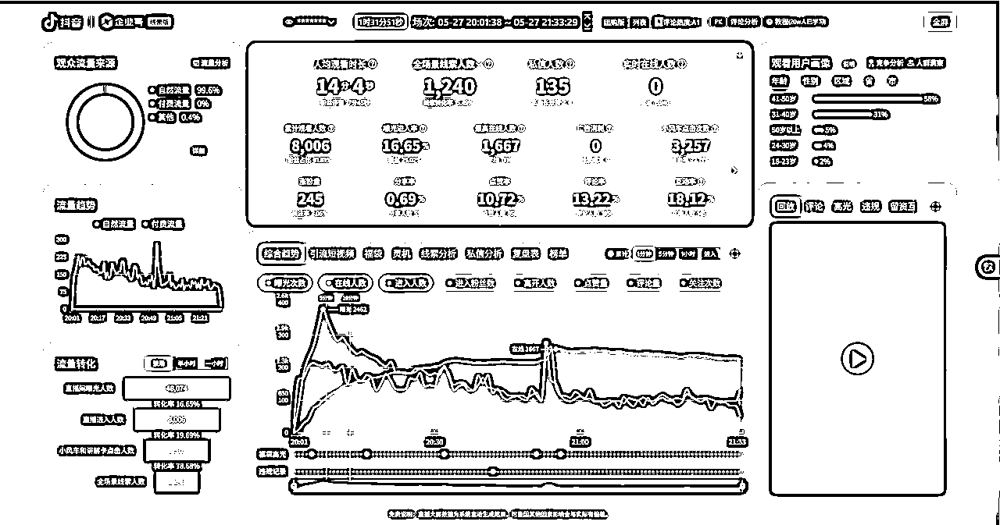
我的直播间第一目标是科普，不是获客。只想获客的话，做视频就够了。今年的志愿填报期间都在做公益，免费教家长和同学填志愿。
那么，直播间各项指标要怎么提升呢？
首先要搞定的就是直播间的整个画面，这个涉及到摄影间的打造，灯光的布置，让主播看上去更专业，总体来说比较复杂，这里就不展开了。
和AI比较相关的是直播间贴片，我采取的是【AI视频＋AI文字】的方式，让画面动起来，比静止的文字更加精美，同时也将今天的直播主题明确表达。
我的直播间贴片示例（4个话题）：
直播间为什么会有互动？也有两种情况
我主要发力点是第二种，因为观众的问题实在是太多了，根本不可能回答过来，所以我通过【AI收集直播间评论】，再通过【AI整理直播间评论】，整理出了观众的主要问题类型，然后通过RPA整理出了这些问题的数据答案（上万种答案），再通过【AI编程】做了一个【高报AI答疑】的直播间系统
观众只需要在评论区输入问题，这个系统就会自动匹配出答案，然后在直播间展示。那么评论互动率当然就蹭蹭往上涨了。
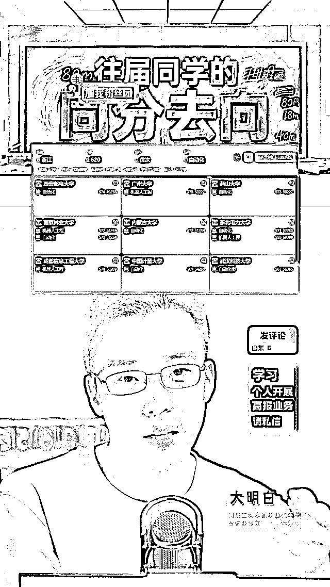
虽然曝光量可能一般，但经常是教育赛道最热闹的直播间：
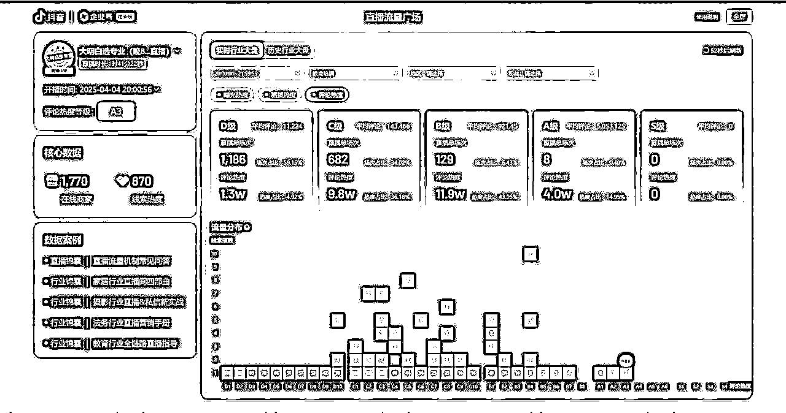
直播间的核心是内容，人均停留时长就是内容质量的指标。
那么，直播间内容应该怎么做呢？
我的方式很简单，讲专业的时候，就是把自己的爆款视频作为PPT来进行专业讲解，本来就是经过市场检验的内容，当然大家更愿意听。
答疑时，就切换出那套AI自动答疑系统。
再加上AI做的贴片，RPA做的评论区自动回复，AI做的答疑系统，AI做的分数趋势系统，AI做的专业满意度追踪系统，人均停留时长当然就很好了。
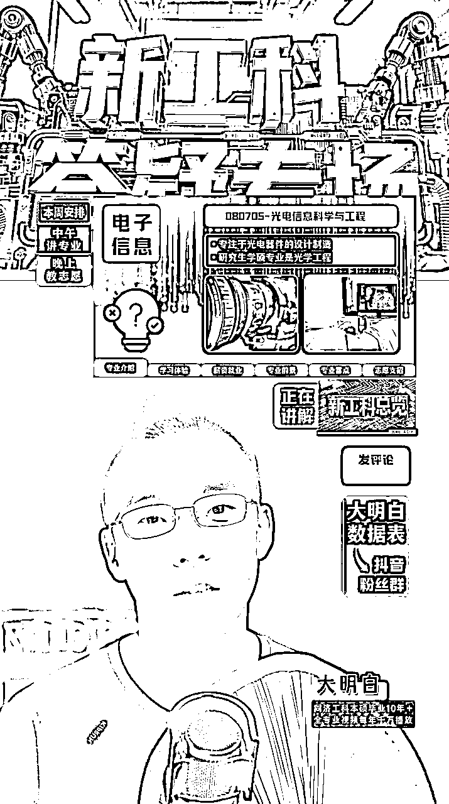
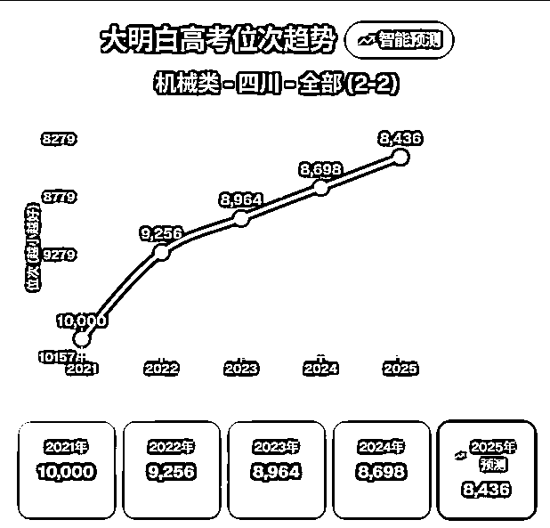
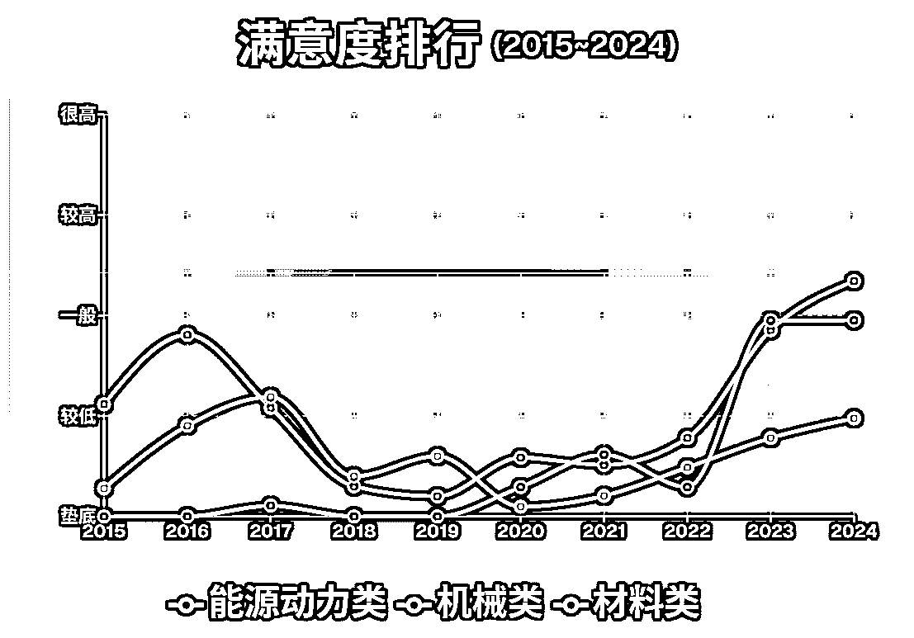
在直播中，我有一个【AI评论收集系统】，直播后有一个【AI直播复盘系统】
总结一下直播间的AI技术：
要做产品先找需求，需求从哪里找，当然从评论区里找，这是做直播的优势，所以上一步我们在【评论区收集的评论】是非常重要的，那就是产品的来源
而且直播间的评论是有日期的，每年什么时候观众关心什么话题都很清晰，都可以做对应的产品，当然也可以用来做内容。
理论上讲，IP做产品的成功率应该很高，观众都把需求提得明明白白了。
我已经从直播中已经收集了几十万条评论了，这些评论都是家长的痛点、困惑、需求。我把无用的评论删除后，把内容扔给GPT和Gemini进行分析，找到轻量化、可复制的产品。
为什么要做轻量化、可复制的产品呢？因为一人公司的核心就是把一份时间卖N份。如果要做定制化的产品，比如咨询报告、定制方案，那也得是全自动制作才划算。
今年我从各个AI的评论分析报告中找到了一款比较容易落地的产品，卖了两三千份。当然把这个产品做出来也不容易，RPA+AI一起折腾了半个月才搞定。
当时GPT给的建议：
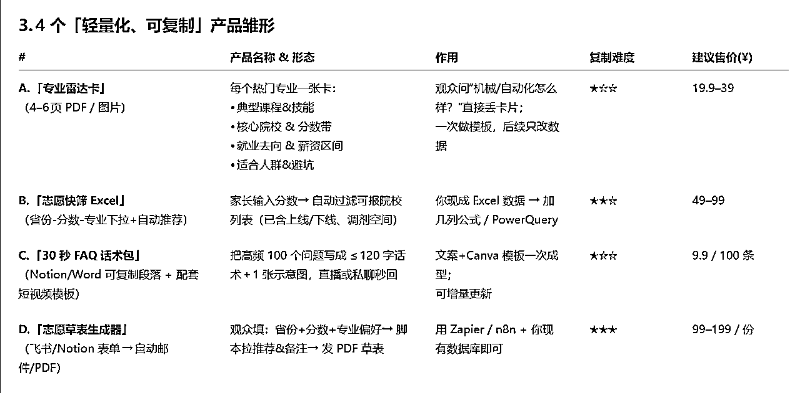
给一人公司的提示词建议：
我是一个xxx，我擅长的领域是xxx，这是在我的直播间收集的评论，帮我从其中找到可能的轻量化的，可复制交付的产品
通过视频和直播，我已经和粉丝建立了信任，所以转化总体来讲是比较顺利的，这是IP的小优势。
我的粉丝从直播间来到微信后，一半家长两三句话就能成交，不能成交就算求。
如果家长想交流，我会让他自己去公众号提问，【公众号里有我做好的智能体】，目前是用coze做的工作流，调用知识库的内容回答。这就解决了答疑的问题。
但是公众号中coze智能体的局限还比较多，字数限制，时间限制，反应也比较慢。未来我更看好腾讯智能体和公众号的结合，一个生态下的产品应该会好用一些。
感谢大家的阅读，对你有帮助就好啦：）